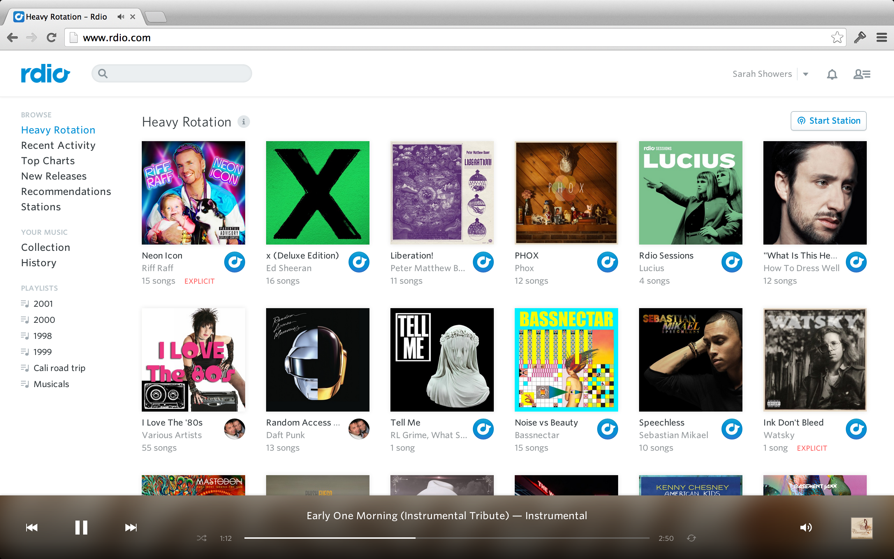
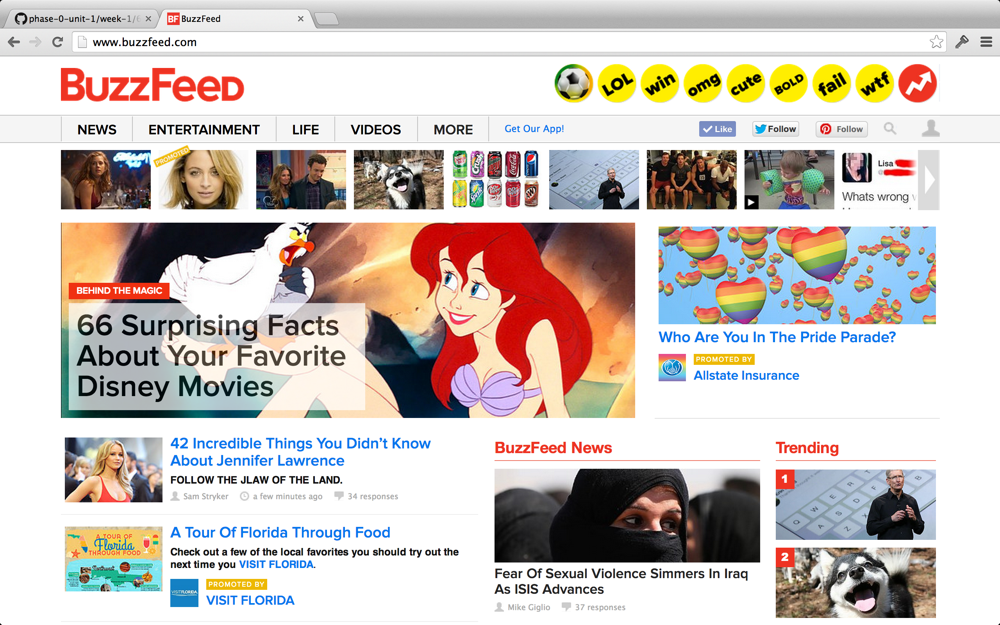

Rdio
I use Rdio on a daily basis on my computer or my mobile device to steam music. It is a similar product to Spotify however, do me a favor - sign out of your Spotify account and then go to the landing page for spotify.com. The first thing I am greeted with is a download link. This is highly inconvenient to me. I simply want to listen to music on my new computer and I didn't get around to downloading Spotify yet. With Rdio, I get none of that nonsense, I simply click to sign in with my Facbook account and I'm off.
Once I'm logged in I'm face with a clean user interface. I can choose from one of my own playlists, I can search for something I'm feeling right now, or I can select one of the albums Rdio things I might like to listen to based on my prior selections and who I follow. Pretty sweet, huh? Meanwhile, I'm still waiting for Spotify to download... *snore*!
If you don't believe me, take a look for yourself.
This looks clean and uncluttered yet, still shows music, exactlly what you'd expect from a music site. It also solves the problem of a single household having to sign up for multiple Spotify accounts to use on mobile devices - the smart folk at Rdio offer a family plan! GENIUS!
How does this differ from Pandora, I hear you cry? Well, limited music library and annoying ads, I much prefer iHeartRadio. I digress, we aren't comparing music streaming apps here... forgive me.
BuzzFeed
I can't quite belive I'm admitting this but BuzzFeed is my guilty pleasure. I spend far too many hours every day reading celebrity trash and generally rotting my brain. My justification is that once in a while, I may stumble across I great "how to" article that I bookmark for one day when I'm feeling creative enough, and... well, let's face it, I'm probably never going to make that indoor herb garden, nor that cute shirt dress. I am biased toward anything that has a section tailred to my homeland of the UK, so I can get my dose of filth from back home too.
I have a love hate relationship with BuzzFeed. I love the pointless trashy storeis. I hate, Hate, HATE, the entire layout, it's messy and disorganized, I think it looks cluttered and it's hard to navigate around. It seems that most of the time it's pretty hit or miss whether or not you happen to stumble across something that is of interest and so I tend to gravitatie toward the mobile site, which is still buggy and crashes ALL THE TIME, but I am addicted nonetheless.
I'm sorry, I have to, Facebook took over my life 6 years ago and I've never gotten it back! As a person that battled with MySpace and never quite got things to work (I know, ironic now), Facebook was the perfect answer for a girl that was moving to a foreign land and wanted to stay in touch with family and friends. Since then I have moved long distances twice more and without Facebook I would probably never hear from, let alone see some of those faces I've met along the way. Personally, I have a lot to thank Mr Zuckerberg for afterall ""How on earth did we stalk our exes, remember our co-workers' birthdays, bug our friends, and play a rousing game of Scrabulous before Facebook?".